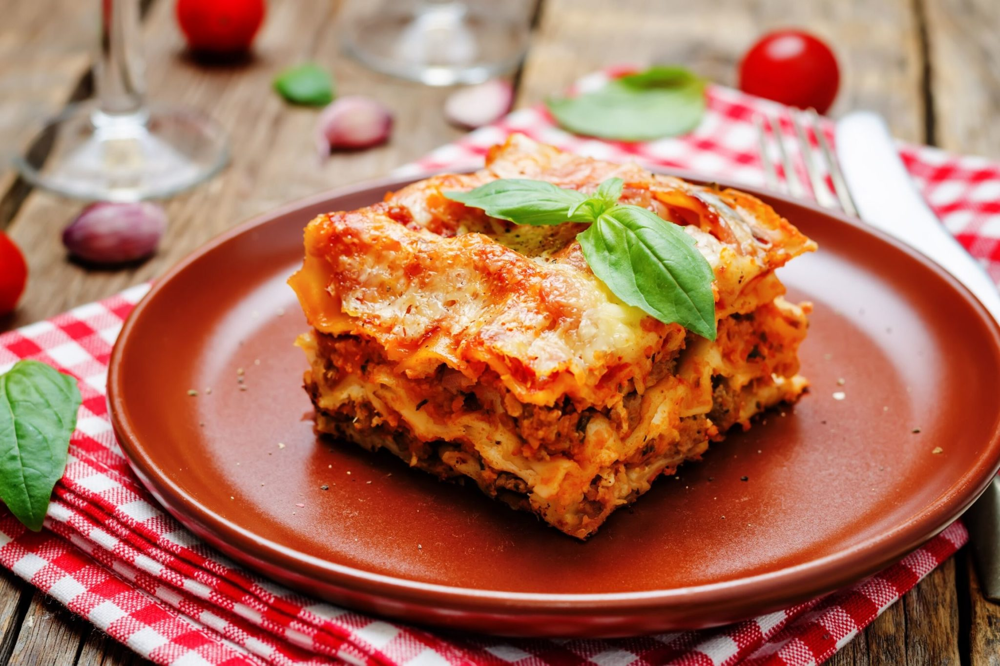

Lasagna

Lasagna is a classic Italian dish characterized by its rich layers of flavor and texture. It typically consists of sheets of pasta, often made fresh or dried, layered with a savory filling that usually includes a combination of ground meat (like beef or sausage), ricotta cheese, mozzarella, and a robust tomato sauce. These ingredients are seasoned with herbs such as basil and oregano, adding depth to each bite.
Ingredients
- Pasta
- Ground Meat
- Cheese (of your choice)
- Tomato Sauce
- (Not really optional) Seasonings: Basil, Oregano etc.
Steps
- Preheat the Oven: Preheat your oven to 375°F (190°C).
- Make the Meat Sauce:
- In a large skillet, heat a drizzle of olive oil over medium heat.
- Add chopped onion and sauté until soft, about 5 minutes.
- Stir in the garlic and cook for another minute.
- Add the ground beef or sausage, cooking until browned. Drain excess fat.
- Stir in crushed tomatoes, tomato paste, basil, oregano, salt, and pepper. Let simmer for about 15-20 minutes.
- Prepare the Cheese Mixture:
- In a bowl, combine ricotta cheese, egg, and a pinch of salt. Mix well.
- Assemble the Lasagna:
- Spread a thin layer of meat sauce on the bottom of a 9x13-inch baking dish.
- Place a layer of noodles over the sauce.
- Spread a portion of the ricotta mixture over the noodles, followed by a layer of mozzarella cheese, then more meat sauce.
- Repeat the layers (noodles, ricotta, mozzarella, meat sauce) until all ingredients are used, finishing with noodles and a generous layer of meat sauce and mozzarella on top.
- Bake:
- Cover the dish with foil (to prevent sticking, you can spray the foil with cooking spray).
- Bake for 25 minutes. Remove the foil and bake for an additional 15-20 minutes, or until the cheese is bubbly and golden.
- Cool and Serve:
- Let the lasagna cool for about 10-15 minutes before slicing.
- Garnish with fresh parsley or basil if desired. Serve with a side salad and garlic bread.